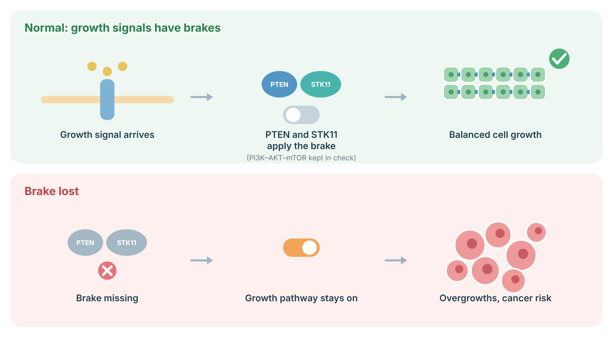

A bilingual patient-and-clinician protocol for prevention, surveillance, early recognition of complications, and family care.
Routine supported guideline practice Optional individualized or low-evidence Not recommended no proven routine benefit
STK11 is a tumor-suppressor gene. A harmful inherited change can cause Peutz-Jeghers syndrome, often called PJS. PJS can cause dark spots on the lips or inside the mouth, gastrointestinal polyps, bowel blockage, bleeding, and higher cancer risks. Care starts in childhood because polyps can cause problems before cancer risk becomes the main concern.
STK11, also called LKB1, encodes a serine-threonine kinase that regulates cell polarity, metabolism, AMPK signaling, and mTOR activity. Germline loss-of-function variants cause autosomal dominant PJS. A clinical diagnosis remains valid when accepted clinical criteria are met even if routine testing does not identify a variant.
No reproducible genotype-specific cancer surveillance schedule has been validated. Some studies suggest phenotype differences by variant type or location, but evidence is not sufficient to alter routine organ-specific surveillance.
Cells grow when they receive growth signals, and a pathway called PI3K–AKT–mTOR passes these signals on. PTEN and STK11 act as brakes on this pathway. When a brake is lost, the growth pathway stays switched on, which can cause benign overgrowths (hamartomas or polyps) and raises the risk of certain cancers.
STK11: STK11 (also called LKB1) puts the brake on mTOR through an energy sensor called AMPK.

Sources: Shaw RJ, et al. Cancer Cell 2004;6:91–9 (PubMed).
Risk estimates are ranges, not predictions for one person. The most important non-cancer problem is a bowel polyp causing blockage or intussusception. Sudden severe abdominal pain, repeated vomiting, black or bloody stool, marked weakness, or fainting needs urgent assessment.
| Outcome | Approximate cumulative risk in PJS | Clinical level | Interpretation |
|---|---|---|---|
| Any cancer | About 83% by age 70 in older pooled studies | High | Estimate is affected by referral bias and older cohorts. |
| Colorectal | About 39% | High | Mean diagnosis age about 42 to 46 years. |
| Stomach | About 29% | High | Mean diagnosis age about 30 to 40 years. |
| Small bowel | About 13% | Moderate | Mean diagnosis age about 37 to 42 years. |
| Pancreas | About 11% to 36% | High | Wide range reflects small cohorts and ascertainment differences. |
| Breast, females | About 32% to 54% | High | Risk can approach that seen in BRCA1/2 carriers. |
| Ovary, mainly SCTAT | About 21% | Moderate | Many PJS-associated SCTATs are small and benign, but malignant cases occur. |
| Cervix, including minimal deviation adenocarcinoma | About 10% | Moderate | Rare tumor type; cytology may be insensitive. |
| Uterus | About 9% | Moderate | Evidence is less precise than for GI, breast, and pancreas. |
| Testis, mainly large cell calcifying Sertoli cell tumor | About 9% | Moderate | Often presents in childhood with hormonal signs rather than metastatic disease. |
| Lung | About 7% to 17% | Moderate | No PJS-specific imaging program is established. |
Older pooled studies estimated an overall cancer risk near 83% by age 70. These figures can overestimate current risk because they include referred families and people managed before modern surveillance. Intussusception has been reported in roughly 44% by age 10 and 50% by age 20 in historical cohorts.
The goal is to prevent bowel emergencies, anemia, bleeding, and cancer. Children usually have a first small-bowel study, upper endoscopy, and colonoscopy around age 8 to 10. The next test depends on what is found. Adults usually continue lifelong testing every 2 to 3 years, with shorter intervals when polyp burden is high.
Before capsule endoscopy, assess obstruction risk. Symptoms, prior surgery, or known stenosis may justify patency testing or cross-sectional imaging first. Check CBC and ferritin when bleeding, fatigue, heavy menses, or a high polyp burden raises concern for iron deficiency.
PJS raises pancreatic cancer risk. Screening can find small cysts that are not cancer and can lead to more tests. Screening should take place in a high-volume program that reviews MRI and endoscopic ultrasound findings together.
There is evidence of stage shift in high-risk surveillance cohorts, but direct survival evidence specific to PJS remains limited. Incidental cysts are common. Management should follow multidisciplinary pancreatic cyst and high-risk surveillance pathways.
Breast cancer risk is high. Start breast awareness in the mid-20s. From age 30, most guidelines recommend a breast examination every 6 to 12 months, annual breast MRI, and annual mammography. Screening may start earlier when breast cancer occurred very young in the family.
Risk-reducing bilateral mastectomy is an option, not a routine requirement. It substantially lowers breast cancer incidence, but a PJS-specific survival benefit has not been demonstrated. Shared decision-making should include reconstructive options, residual risk, body image, and reproductive plans.
PJS can cause uncommon tumors of the cervix and ovary. Report unusual watery vaginal discharge, bleeding between periods, bleeding after sex, bleeding after menopause, new pelvic pain, abdominal swelling, or signs of early puberty. Regular gynecologic care is important, but no screening test has proven that it prevents death from these tumors.
Routine risk-reducing hysterectomy or salpingo-oophorectomy is not established for all STK11 carriers. Hysterectomy after childbearing may be discussed in selected patients, particularly when another pelvic operation is planned or surveillance is difficult. Premenopausal oophorectomy has important bone, cardiovascular, sexual, and menopausal effects and should not be performed solely for PJS without individualized specialist review.
Boys and men with PJS can develop Sertoli cell tumors that produce estrogen. Families should report breast enlargement, rapid growth, advanced puberty, or other feminizing changes. Girls should be assessed for early puberty. Most findings are managed by pediatric endocrinology and urology rather than cancer surgery.
Aromatase inhibitors can be considered by pediatric endocrinology for hormonally active large cell calcifying Sertoli cell tumors. Evidence is based on small series and expert care.
Do not smoke or vape. PJS may raise lung cancer risk, but there is no special lung scan schedule for all people with PJS. Standard low-dose CT screening applies only when age and smoking history meet current provincial criteria.
Provide smoking cessation support and symptom education. Apply general-population screening for skin, prostate, and other cancers unless personal or family history justifies more. Routine whole-body MRI, PET/CT, tumor markers, or repeated abdominal CT is not recommended for asymptomatic PJS surveillance.
Most prevention in PJS uses repeated endoscopy and removal of important polyps. Surgery is reserved for polyps that cannot be safely removed, bowel emergencies, cancer, or selected breast and gynecologic decisions. No medicine has been proven to prevent PJS polyps or cancers.
Avoid repeated bowel resections when safe endoscopic clearance is possible because short-bowel complications accumulate. During necessary laparotomy, intraoperative enteroscopy and comprehensive polyp clearance can reduce future procedures.
Optional Tamoxifen 20 mg orally daily for 5 years is a standard Canadian high-risk breast prevention regimen for suitable premenopausal or postmenopausal patients. Raloxifene 60 mg daily for 5 years is limited to postmenopausal patients. Aromatase inhibitors, such as anastrozole 1 mg daily for 5 years, may be considered after menopause. These regimens have not been specifically proven in STK11 carriers.
Aspirin, metformin, mTOR inhibitors, and supplements are not established PJS chemoprevention. Do not prescribe them solely to prevent STK11-related cancer outside a clinical trial or another clear medical indication.
Each child of a person with a germline STK11 pathogenic variant has a 1 in 2 chance of inheriting it. Testing relatives can identify who needs childhood surveillance and who can avoid it. Testing a child is appropriate because care starts in childhood.
Insurance, privacy, and disclosure rules vary by jurisdiction. Counselling should include practical implications without overstating legal protections.
No diet removes the inherited risk. A balanced diet, regular activity, healthy weight, limited alcohol, and avoiding tobacco support general health. People with anemia may need iron treatment after the source of bleeding is addressed.
If cancer develops, treatment depends on the cancer type and stage. An inherited STK11 result does not by itself choose one treatment. Tumor testing can provide separate information.
Somatic STK11 loss in tumors, especially non-small cell lung cancer, has been associated with distinct biology and in some studies lower response to immune checkpoint inhibitor monotherapy. This observation is not a reason to withhold standard therapy automatically. Treatment decisions should use the complete tumor profile, co-mutations, stage, approved indications, and multidisciplinary review.
Pathologists should know the PJS diagnosis when evaluating cervical, ovarian, testicular, GI, and pancreatic lesions because PJS-associated histologies can be unusual.
Research is testing better pancreatic imaging, blood tests, capsule analysis, and medicines that target STK11-related pathways. These approaches are not routine care yet.
Participation in registries and prospective high-risk pancreatic or polyposis studies is encouraged when available.
PJS care works best through a coordinated genetics, gastroenterology, breast, gynecology, pancreatic, pediatric, and surgical team. The schedule must be adjusted to symptoms and findings.
Baseline upper endoscopy, colonoscopy, and small-bowel imaging at 8-10 years, earlier for symptoms. Repeat by phenotype. If negative, many guidelines resume at 18.
Upper endoscopy, colonoscopy, and MRE or capsule every 2-3 years lifelong, more often for high burden. Remove symptomatic and clinically important large polyps.
Annual MRCP and/or EUS in an expert center. Institutional starting age should be confirmed, commonly 30-35 years.
Awareness from 25. Clinical examination every 6-12 months and annual MRI plus mammography from 30, individualized to family history.
Annual specialist review from 18-20 with symptom-triggered evaluation. Pelvic ultrasound is guideline-dependent; CA-125 is not routine.
Yearly assessment for early puberty or feminization. Ultrasound only when clinically indicated.
Genetic counselling, cascade testing, CBC/ferritin as indicated, smoking avoidance, urgent obstruction plan, and multidisciplinary review.
Whole-body MRI, PET/CT, tumor-marker panels, aspirin or mTOR prevention, routine CA-125, and routine testicular ultrasound.
This protocol uses major North American and European guidance plus key risk studies. Guideline versions should be checked before publication.